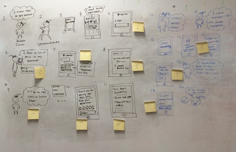
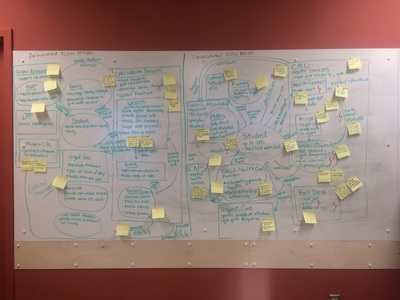
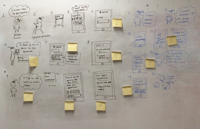
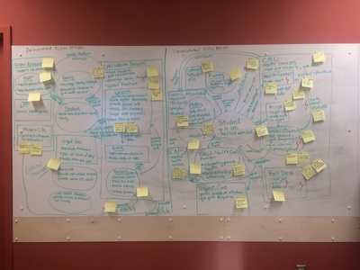

Portfolio


 





About me
Researcher, Educator and Designer. Senior @ Carnegie Mellon University
Hello! I am passionate about using technology, design and education to support healthcare, educational and public policy problems. My diverse work experience includes conducting Human Factors usability tests for medical devices, teaching writing to urban middle school student, running quantitative data analysis on casual theoretical questions and designing online learning programs.
I am looking to work in a design and research role in a fast paced organization/ firm/ startup starting in Fall 2017.